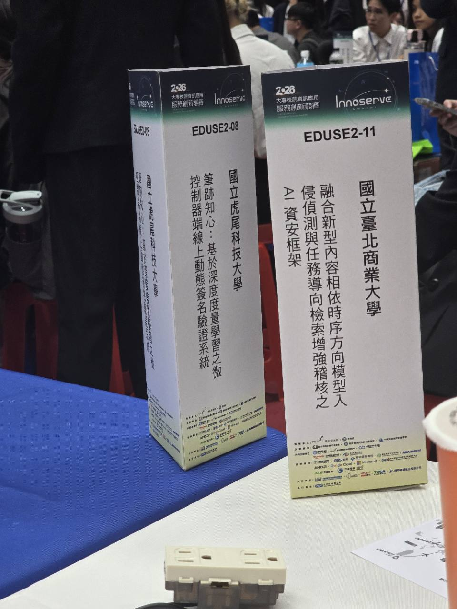

2026競賽紀錄InnoServe Awards
2026 資服競賽，
我的參賽紀錄。
2026 大專校院資訊應用服務創新競賽
這次與團隊參與資安技術組，作品結合入侵偵測、任務導向檢索與本機 AI 稽核。我主要負責後段的 RAG 與 Agent，在這裡留下作品介紹與現場紀錄。
查看作品資料與展示OUR PROJECT
參賽作品
融合新型內容相依時序方向模型入侵偵測與任務導向檢索增強稽核之 AI 資安框架
- 參賽學校
- 國立臺北商業大學
- 參賽組別
- 資安技術組
- 隊伍編號
- EDUSE2-11
ABOUT THE PROJECT
讓偵測結果，有證據可以追溯。
這套 AI 資安框架以同一事件串接偵測、案例檢索、AI 稽核與受控處置，讓判定依據與後續動作能連在一起閱讀。
- DETECTION
入侵偵測
CTBM 與 PBCNN 互補融合，產生 17 類正式判定與流量表徵。
- RETRIEVAL
任務導向檢索
依事件特徵檢索 Top-5 訓練案例，提供可追溯的參考證據。
- AI AUDIT
本機 AI 稽核
核對偵測結果與案例，回傳支持、複核或不確定的稽核結論。
- RESPONSE
受控處置與回復
經策略閘門檢查後執行允許動作，保留處置與期限回復紀錄。
流程依團隊公開技術文件整理。AI 稽核保留原正式分類，處置與回復在隔離測試環境中驗證。
MY CONTRIBUTION
我負責的部分
RAG & Agent
我的分工主要是專案後段的 RAG（檢索增強生成）與 Agent，對應到案例證據檢索、AI 稽核與後續流程的串接。
RAG：補上判讀依據
系統結合流量表徵與類別機率，從訓練案例庫找出相關案例，將證據交給後續稽核。
Agent：銜接稽核流程
系統將判定與證據交由本機語言模型核對，再銜接策略檢查及受控處置，留下同一事件的執行紀錄。
PROJECT MATERIALS
作品資料與展示
團隊公開資料，連結另開分頁。
MOMENTS AT THE COMPETITION
比賽現場，留個紀念。
點選照片，可開啟原尺寸影像。
帶著參賽證，來到現場
資安技術組的參賽識別證，與鏡頭後方的比賽現場。

作品的名字，出現在立牌上
國立臺北商業大學 EDUSE2-11 團隊的作品與參賽資訊。
2026 大專校院資訊應用服務創新競賽資安技術組 · EDUSE2-11
回到作品與經歷